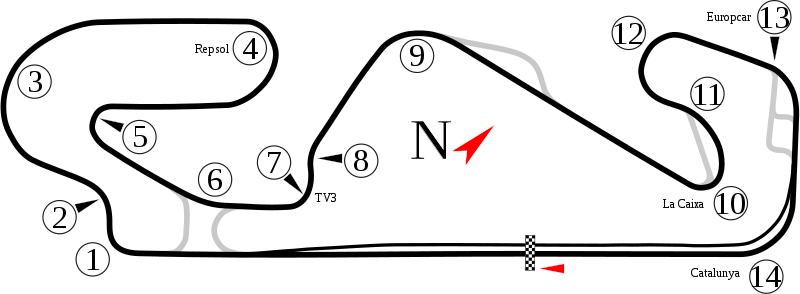

Dugo očekivana utrka Formule 1 u Španjolskoj održana je 4.6.2023. na legendarnoj stazi Circuit de Barcelona-Catalunya.
Nakon Monaca selili smo se u Španjolsku za po još jednu uzbudljivu utrku.
Na samoj stazi već i prije početka samog vikenda dočekale su nas neke promjene. Više nema šikane nakon 13 zavoja te je do 14 zavoja čisti flat out dio staze nakon kojeg slijedi brzi 14 zavoj do same start-cilj linije.